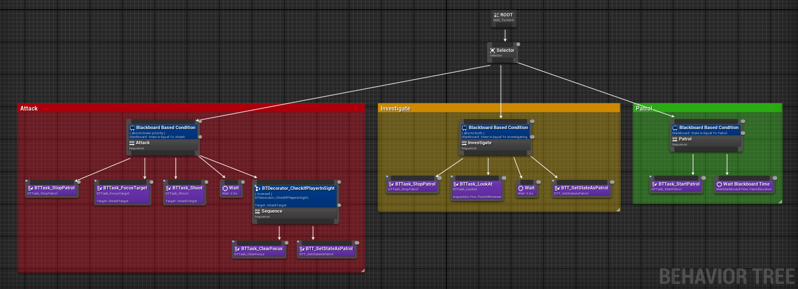
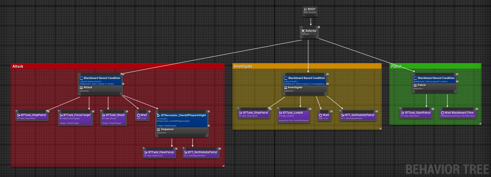
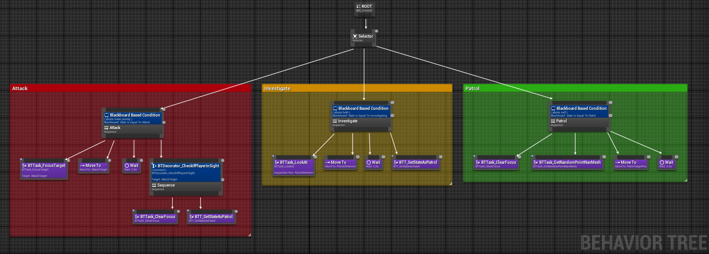
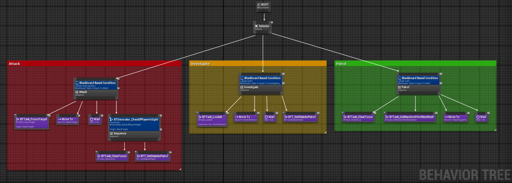
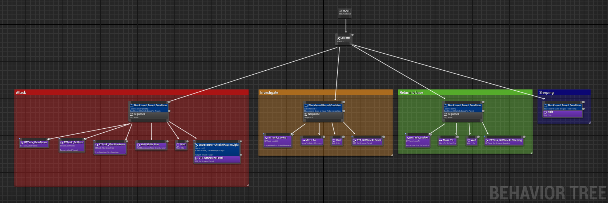
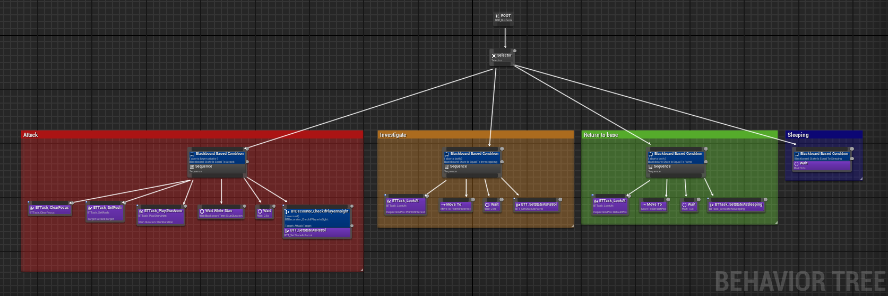

J'ai dû recoder le mouvement de la caméra ainsi que le déplacement du joueur.
J'ai également implémenté les mécaniques de saut, d'accroupissement et de course.
En plus, j'ai ajouté la possibilité de glisser sur le sol: si le joueur s'accroupit en courant, il bénéficie d'un boost de vitesse et la caméra se rapproche du sol pour renforcer l'effet.
J'ai aussi développé un système de glissade sur les murs, réduisant l'influence de la gravité. Lorsqu'il est accroché à un mur, le joueur peut également effectuer un wall jump.

J'ai également implémenté les mécaniques de saut, d'accroupissement et de course.
En plus, j'ai ajouté la possibilité de glisser sur le sol: si le joueur s'accroupit en courant, il bénéficie d'un boost de vitesse et la caméra se rapproche du sol pour renforcer l'effet.
J'ai aussi développé un système de glissade sur les murs, réduisant l'influence de la gravité. Lorsqu'il est accroché à un mur, le joueur peut également effectuer un wall jump.


 

 

 
